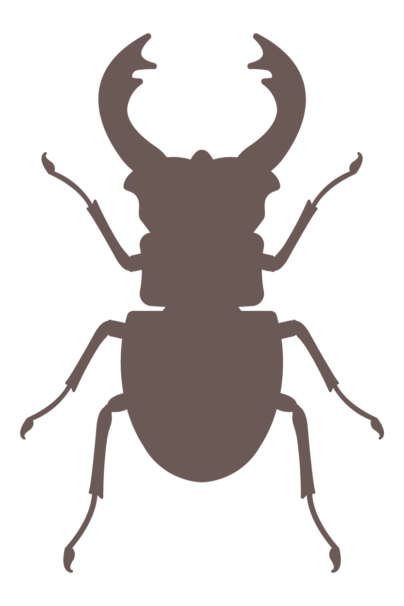

issue I
Lucanus Cervus
*
introduction
Gerardo Masuccio
Everything is suspended before an instant of harmony. And then all that is left is to wait. Hence, perhaps,
existence is a waiting of the wait and only between spells the conscious man can manage to harvest a few minutes of real life. What is left is idealised memory or, at times, projection.
And even though living in the here and now requires superhuman effort, the outcome of such – rare – sacrifice can still be reduced to a race towards the void.
Among men I have met wasps and cicadas, mosquitos and dragonflies, whose years revelaed themselves to me as an incomplete collection of seconds. I have counted decades of wrinkles on a face that lived seven days,
thousands of white hair on a head that has known but one sunset. And I have run into some ephemera that spent a century to get four minutes of life. Men, including me, are thus not more long-lived than an insect,
even though flies, butterflies and beetles are recurring elements in the finest similes on caducity.
Indeed, in their unfazed presence, that is alien to time and hence contemplates it unbiased, I have always glimpsed at something immortal,
as if paradoxically the highest end of life was revealed in that which is an end in itself and that,
averse to a hedonistic perspective, comes into the world to ensure its continuity.
And it annihilates itself to impose on nothingness, master of the pure instant.
A strength that, stranger to man, drastically reduces its vital tension.
Not that it's a crime, since through a careful look each one of us serves the sentence of places and time.
Each one of us suffers imprisoned in oneself, forced – but this time as a punishment – to singularity.
Certainly, extenuating circumstances apply also to men. Love, for instance, that allows him to escape from his self
and observe the world through the eyes of another as if they were his own (in a sort of spatial duplication). Or art,
that preserves his thoughts and sublimates them, beyond the limits of mortal life (duplication in this case acts across time).
They are primary urgencies, but authentic velleities in the game of nature. The cricket and the ladybug,
solely in the fact of existing, testify that life is a long and full spell, until the word 'I' is pronounced.
They come to the world, they give life – without the human claim to possess and direct it
– and they die: they are in the instant, they do not know any wait, and their fly is peace.
This series dedicated to insects, between science and literature, is thus a precious opportunity to reflect on oneself,
as antennae, wings and stingers gradually emerge from the silence of paper and take shape, carrying with themselves the mistery
of a life that is minimal, but certainly not inferior to the vacuous complexity of the reader.
The first volume of the series is devoted to the stag beetle, a fierce insect, little known and with evocative characteristics.
Francesca Scotti, with her usual grace, wrote a story that has precisely this insect as protagonist, while Michele Zilioti collected,
with the accuracy of the entomologist, the details and peculiarities of the species, accompanying them with a brief historical examination.
I didn't know the stag beetle. Or – maybe – I did know it, but I had never wondered anything about it ("the messenger has the worry of the deserter").
Scrolling through these pages though, I have added a few seconds of intensity to my brief life as a man.
*
Details
Francesca Scotti
Usually, when we have a date, regardless of how early I am, you are already downstairs. I can start seeing you from afar: you are just standing there, on the edge of the sidewalk, long skirt, trainers, and a shoulder bag filled with sheets of paper and drawing pencils. Behind you the apartment block called Wood of willows looks even bigger than it actually is and you look even smaller than you actually are. Cars slow down to see if you want to cross the road, but you ignore them. You never look right nor left, as if you aren't expecting anyone. And you stare at the horizon, almost as if you could see it beyond the city buildings. As you stand there on the concrete cordon, you remind me of one of those birds that perch on electric wire. But today, in front of the Wood of willows you are not there.
A kid quick on his bike overtakes me, the black blazer of his school uniform billows, it's the cape of a superhero. You used to wear a school uniform too, blue pleated skirt, knee-high socks with the school crest, and a striped tie. That's what you were wearing when I first met you: wintertime, we used to go to the same yardsale and look for the same antique calligraphy and painting brushes. We both liked to paint, your hands were covered in ink and colours like mine. You left me buy the tools because I had never had anything like that. You helped me pick, studying the size of my palms, the length of my fingers, the strength in my arms. I remember thanking you and asking if you were cold: your knees were white like rice water.
I got in front of the entrance and yet you are not here. I look at the hallway plunged in semi-darkness and I search for the stylised willow on the wall at the back. It seems vanished, but it's only covered in dirt and dust. The branches engraved in limestone and the long thin leaves preserve a time of which I cannot trace back the origin nor the volume. I give a look to the blooming camellia in the oval flowerbed next to the bicycle parking, maybe you've hidden there and you want to play a prank on me.
"It's a sasanqua," you once told me. "The japonica lets the whole flower drop when it withers, while the sasanqua loses its petals. Did you ever manage to paint the white of a camellia?".
It's November, light petals and trampled petals stand out on the asphalt but you, behind the branches, are not there. I remember a spring day: we were in the park, sitting on the grass, surrounded by drawings, drafts, lines on paper. Next to us a group of children was running through the twisted trunks of cherry trees. You looked at them for a while, then you drew a thin circle in the middle of a piece of paper, emptiness on emptiness.
"I hated playing hide and seek, I was sure nobody would have come looking for me," you said.
You are not here, you are not coming. So I come up. I have the keys to your apartment: you've left me a set since your door is one of those that often locks you out. It particularly enjoys doing it on Tuesday and Fridays when you get up sleepy before eight so you don't miss the garbage trucks. You get out on the street wearing the first things you find and it – clunk – it closes behind your shoulders. Clearly it likes to do it especially in winter when temperatures are frigid. Luckily there's a Starbucks two blocks from your place. The first time I came to rescue you I took a picture of you. Sitting in the storefront, with no make-up, wrapped in the old color-stained kimono you used to wear to paint, splashed with tempera. It was really you. Eternally you.
"You must delete it," You told me when I've shown it to you.
"But it's so beautiful, it looks like the instant of a different time. You in the past and in the future."
"No, you must delete it because something has to change. I, for instance. Everyone says that to me", you pushed aside the camera and turned your head to look away.
To avoid arguments, I deleted the shot.
You live on the first floor, I'm in front of your door: "Michiko Yamada" is written on the bell. I don't need to lower the handle, the door is ajar, but the house is empty. The tatamis' colour is dry, dusty, and the third paper panel of the yukimi shōji is still torn: you tore it, you bumped into it with your hand. You lost balance when you were trying on your first pair of heels: new job, new uniform. From the next day you would have served hot beverages, ice creams, bento boxes and sandwiches on the train. We laughed, and when you told me that fixing the yukimi shōji would have been a challenge – we would have had to change the paper of the whole window by removing the frame – we laughed even more. But you were not really merry, you had accepted that job just to make your parents happy.
"Painting will bring me nothing but frustration, I won't have a family", you said, running your finger on the ripped paper edges.
The steel of the sink is opaque but shinier than anything else in here. On the shelf are the two glasses you use to wash your brushes: they are so clean it almost seems like they were never filled with murky water, yet veiled with grey dust. The closet's sliding doors are open; inside, immobile, are left three hangers. I look at them as if I was expecting to see them underneath your school uniform, your painting kimono, your first work tailleur. Then something distracts me, it's a rustling, a ticking behind me. I turn around: on the tatami, where you place the futon to sleep there's a little bamboo cage, consumed, antique. I get closer, it's disclosed and a stag beetle squeezes its legs on the wooden bars.
It too is covered in a thick layer of everything that deteriorated in here. Coloured threads and hair are intertwined in its horns: the threads are those of your clothes, the length that of your hair. It disgusts me and yet I want to touch it, I want to run my finger on the dust, reveal the shine of the body. I want to untangle the skein and free its jaws. Before I can even extend my arm, it takes flight, robust wings spread, and the thinner ones too, folded underneath. Silent it crosses the room, goes towards the light, even closer, and then a snap, a firm and violent noise. It crushed against the window. I think the glass broke and the stag beetle shattered, like porcelain. I know nothing of insects' fluids but in that moment I imagine them dripping on the tatami: bright green, yellow, the lilac of your kimono or the white of the camellia that we couldn't paint.
But the glass is intact and there's no trace of the beetle, save from a small mark of the transparent surface, as if someone had touched it with a finger or their nose. The balcony is full of leaves, feathers, the wrapping of a popsicle, soil carried by the wind. Beyond the railing I can see the heel with the leafless trees and the abandoned temple on top. I remember that summer when we went there at night with a white sheet, a rope and a torch. You wanted to capture a stag beetle, like when you were little. It had rained the day before, light water, summer water. The afternoon had been hot and humid.
"It's the best climate," you said. "When I was little, with the other village kids we would prepare a bait made of ripe bananas, sugar and shōchū. Some people also added Calpis, slightly acidic like yogurt. But not me. I loathe Calpis, I only like its polka-dot bottle"
With this fermented paste you would fill lycra stockings or tea bags and then hang them on trees. You even tasted that mixture: alcoholic, tasty, you said.
The sun had just set and even the wood was turning its green into blue. We were walking on leaves and broken branches, rotten wood and roots crawling out of the ground. The smell in the air was sweet and sour, pungent.
"It's the tree sap," you said. You often replied to my thoughts.
The more we advanced through oaks and sakaki, the more darkness wrapped itself around us: as I raised my gaze beyond the heights I no longer found anything clear.
The torch illuminated the path, moths and quick-moving insects crossed the cone of light, spirits too fast to be followed.
"This is a good spot", you said taking off your backpack.
We remained still, listening: the world around us was alive and invisible. Then I helped you tying a rope between two rough trunks. You hanged the sheet in the dark, as if it was laundry on a sunny day and you pointed the torch. The wait had started.
On a starless night our fake moon quickly attracted many flying creatures, the white was swarmed: I could spot moths, cicadas, mosquitos, and others that I couldn't name.
"There's a venomous spell that you obtain capturing different insects and sealing them all in one jar. The one that survives is the most lethal of them," you said. "That's what the older girl of the group would always tell us".
A rustle, a beating of wings made us gasp.
"There's a divine insect, that feeds on demons and evil spirits. It looks like a massive moth of the silk worm, vicious and merciless with an ominous stinger".
The light flickered. More cicadas, more moths, but no stag beetles.
Even though it was almost impossible to find one at that time you didn't want to give up and so we spent the rest of the night in silence: our words hardened in the absence of that beetle.
We saw the wood change its colour again and then its voice.
"In my family we say that finding a stag beetle is a good omen, it helps concretize one's efforts", you said suddenly, switching off the torch and taking down the white sheet with an abrupt motion. "Their name, kuwagatamushi, is related to that of an ancient samurai helmet".
The sky was starting to light up and I thought I saw two tears drop from your eyes.
"Come on, do you really believe in this stuff?".
You nodded.
"I was hoping I had a choice".
We went home without saying a word, the streetlights were off already and a quick dawn walked us to your apartment. Only once we were inside, barefoot on the tatami and not really knowing how to give purpose to the day, I realised that clung to my bag was a stag beetle. Frightening, enchanting, sleek, solid. It looked like a jewel.
"Oh! Look!", I was sure it would have made you happy.
"It chose you", you said turning your back on me.
All of a sudden I was furious.
"You are just fickle!", I yelled.
Then I went out to the balcony and shook the bag until the insect let go and fell onto the green of the flowerbed.
I take a step back, I go back to the centre of the room. The wooden cage vanished, now the window glass is broken, a breath of cold air seeps through the draft. And as the air climbs up my legs, sneaks underneath my clothes, lifts my shoulders and makes me close on myself, all of a sudden I know why the house is empty and you weren't waiting for me downstairs. The stag beetle had chosen me, I changed, I found the job I desired the most, I lived off my art – colours, exhibitions, sold pieces – my efforts truly paid off. And I immediately forgot about you. I forgot about our dates, your train schedule, your stops, your days off and everything else. I forgot everything until now, and now there's nothing left of us.
*
Usually
Walking on trails in the woods on warm early summer nights one can happen to come across a big flying insect with an antique look. It slowly crosses the sky coloured by the sunset, its legs outstretched almost as to embrace the wind and its large mandibles leaning upwards, ominous and threatening of future battles; yes, this is it, the stag beetle.
Its scientific name is Lucanus cervus (named by Carl Linnaeus in 1758), it's the largest and most majestic beetle of the european fauna. The males can reach a size of eight centimeters and sometimes even more. Its name stems from the extraordinary development in size of the mandibles of the large males, that resemble the set of branching antlers stags have.
Lucanids, the family of beetles the stag beetle belongs to, can be discerned on first sight from scarabs – their cousin species – by the peculiar "dog-leg" shape of their antennae. These are formed by ten segments, the first of which is usually longer and the last four or five that constitute the so-called "club", that looks like a small comb.
One of the characteristic of this family that one can often encounter is the difference in looks between sexes of the same species. Such peculiarity, termed "sexual dismorphism", is very evident in the stag beetle, especially in the most grown males. These specimens are endowed with an armoured head of spectacular mandibles, and can even be twice as big as females, that instead have a small head and short and stubby mandibles.
While the sizes of females tend to be fairly consistent and their shapes moderately variable, in males the differences can be so remarkable to give the impression of being looking at two different species. The variability does not only concern dimensions, with an overall length that can range from less than 3 cm to almost 9 cm, but also the development of head and mandibles. This largely concerns bigger specimens, as smaller males can measure approximately the same size as the mandibles of the larger ones. These significant differences depend both on genetic factors and on climate conditions and food availability throughout the development of the larvae.
Towards the end of May, when nights progressively get warmer, adults get out of their cocoons and go in search of the sap that seeps out of the wounds of old trees, especially oaks, that they avidly feed on. On these same trunks males fight strenuously to conquer the females they intend to mate with. These battles, despite seemingly rather violent, rarely lead to the death of one of the contenders, that mainly try to tear the other away from its foothold and off the tree.
In the midst of summer, after mating, females wander in search for a suitable location to spawn, in the soil close to decomposing wood, often at the bottom of old, more or less decaying trees, preferably oaks, but also chestnuts, beeches, willows or poplar trees. Once the place is chosen, the female inters, gnawing wood and compacting its fragments to form small cavities in each of which she then lays an egg.
Approximately two months later, the little larva is born and starts to devour the decaying wood preferably in the direction of the thick roots of the tree stump. There, it remains for several years – up to eight if it's destined to give origin to one of the larger males – and undergoes three moltings.
Once the development is completed, the larva digs in the surrounding soil forming a robust cocoon in which its metamorphosis will take place. In this small casket, in little more than a month, the larva turns into a pupa, that then turns into an adult beetle. The shapes of pupae already reproduce those of the future adults, except for elytra and wings, that are not fully formed yet.
In September, from the pupa finally arises the adult beetle. The new born doesn't leave its cocoon right away, but spends the whole winter and almost the whole following spring there, at the end of which it will venture outside to restart the cycle.
The stag beetle, for the peculiarity of its looks, has struck man's imagination since antiquity, inspiring a large variety of myths and superstitions – at times extravagant ones.
The name "stag beetle", that is sometimes used to refer to a kite, originates from the children's practice, already documented in ancient Greece, to fly these insects around, tying a thread to one of their legs.
Roman encyclopedic author Pliny the Elder (23-79 BCE), in his Naturalis Historia, recounted that to stag beetle heads was attributed the power to keep diseases away and were hence made into necklace charms for children. The reputation of stag beetles' antlers as good-luck charms has remained to the present day in different forms. In Germany, the traditional Bavarian costume is embellished with a silver chain, the Charivari, to which were attached small hunting trophies, such as stag antlers, sometimes replaced with stag beetle "trophies"! Pliny himself believed the oil in which stag beetles had been cooked to be an ointment to treat fever. In the following centuries, until the 17th century at least, to stag beetle antlers, used as amulets or as ingredients for potions and medicines, were attributed the most bizarre therapeutic virtues. They were used as aphrodisiacs, love potions, as a remedy for cramps and pains, even as diuretics or, in contrast, to cure incontinence.
The stag beetle's reputation has not always been one of a bestower of fortune and bliss. Starting from the Middle Ages, the large antlers, that evoked traditional depictions of the devil, the colour black and its nocturnal habits led to its popular perception as an evil being. Until the nineteenth century in german folklore it was thought to be responsible for the fires that often devastated towns and villages. They were believed to be set by burning coals the stag beetle would take from fireplaces, carried in its mandibles as it flyed over towns, and dropped on straw roofs. Alternatively, it was attributed the power to attract lightning with its presence.
In seventeenth and eighteenth century north european painting, the stag beetle appears as an allegory of evil or even of the Antichrist, depicted in the act of threatening or being cast out by the Savior.
Today the stag beetle is becoming rarer and rarer, because every year its natural habit is further reduced. Ancient woods are replaced by human settlements, or simply cleared for timber, perhaps replaced with artificial reforestation that is not suitable for the stag beetle's life. Furthermore, dead wood, the true lifeblood of the woods, is sistematically removed and destroyed according to questionable forester practices.
For this reason, since 1992 in Europe the stag beetle is a species protected by international laws, such as the Habitats Directive, that not only protects the species, but extends its protection to the environment it inhabits.
Only an appropriate management of the environment will ensure the future survival of these magnificent creatures, true iconic examples of biodiversity.